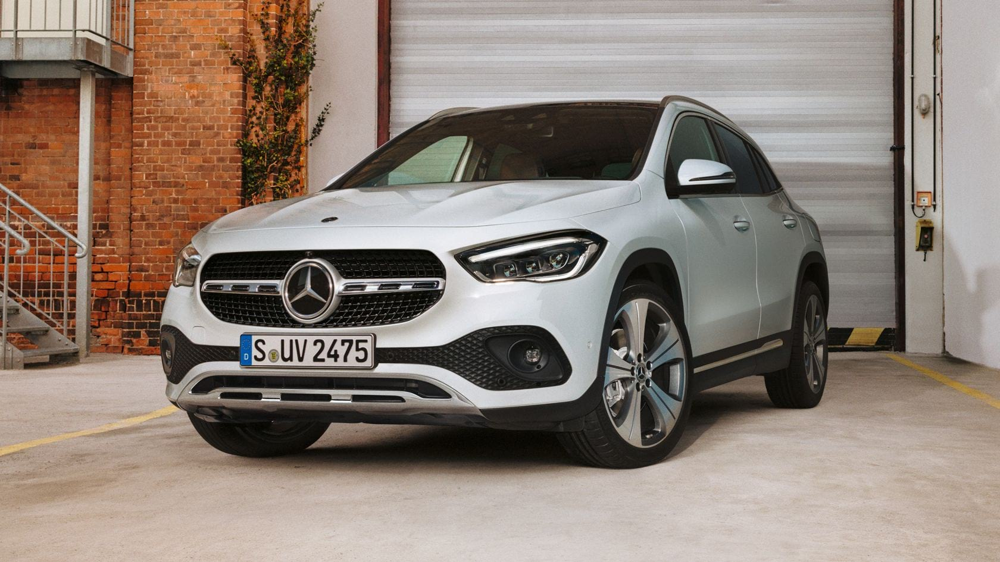

Огляд
Позашляховий потенціал і універсальність Mercedes-Benz GLA Новий GLA перенесе вас не тільки з точки А в точку Б, але і доставить вас в майбутнє. Найбільш інноваційні технології, так само як і сучасні системи допомоги і безпеки роблять Mercedes-Benz GLA ідеальним напарником.
Година пік, довгі нічні поїздки або невідомі маршрути, ваш новий GLA помітно знижує рівень стресу водія. Управління засноване на концепції, яка робить кожну подорож на Mercedes–Benz безпечнішою: Mercedes–Benz Intelligent Drive. Тому що час, який ви проводите за кермом, це ваш час для відпочинку.
Насолоджуйтесь високим ексклюзивом. Модель Edition 1, обмежена кількістю і термінами продажів, розставляє нові акценти і створює унікальні контрасти - в інтер'єрі ексклюзивні сидіння з перфорованої шкіри і декоративним елементом в карбоновому стилі. Зовні червоний фланець прикрашає 20-дюймові легкосплавні диски. Спеціальне видання виконано на базі AMG Line.
Дизайн
Салон Mercedes-Benz GLA продуктивний і комфортний
Інтер'єр нового GLA поєднує в собі неповторні враження, високі технології і
спортивність.
Дизайн встановлює
абсолютно нові
стандарти комфорту і стилю.
Особливі акценти: незалежна широкоекранна панель і спортивні, прогресивно
спроектовані
вентиляційні сопла з підсвічуванням.
Новий GLA доповнює собою актуальне покоління компактних автомобілів Mercedes-Benz. Одночасно, будучи моделлю початкового рівня, він відкриває доступ до успішного сімейства позашляховиків бренду. На відміну від попередньої моделі тут має місце сильніший характер: будучи висотою 1611 мм, за цим параметром новий GLA перевершує свого попередника більш ніж на десять сантиметрів. Відповідно більш висока - властиву автомобілям класу SUV - посадка означає також більше простору над головою на першому ряду сидінь.
Простір для ніг в задній частині салону також істотно збільшився. До типових для позашляховиків елементів дизайну тут відносяться: вертикально орієнтована передня частина кузова, короткі передні і задні звіси, а також захисне облицювання по периметру кузова. Моделі 4MATIC в серійній комплектації оснащуються технічним пакетом Offroad. Він включає в себе додатковий режим руху, функцію контролю швидкості при спуску, Offroad-анімацію на мультимедійному екрані, а також в поєднанні зі світлодіодними фарами головного освітлення MULTIBEAM LED - спеціальну функцію освітлення для бездоріжжя.